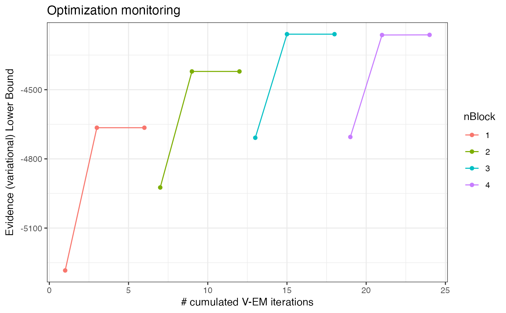
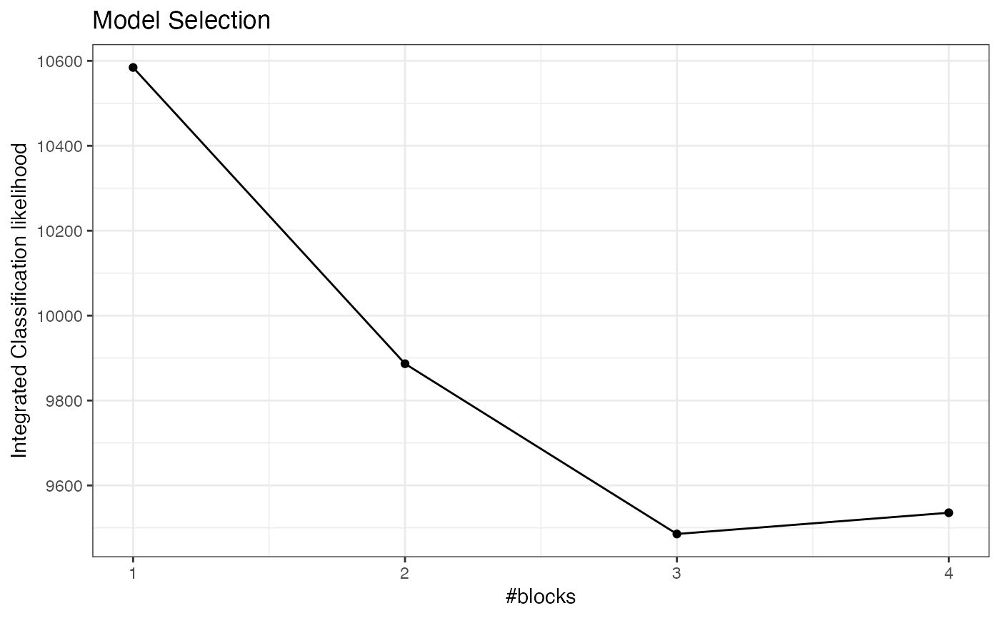
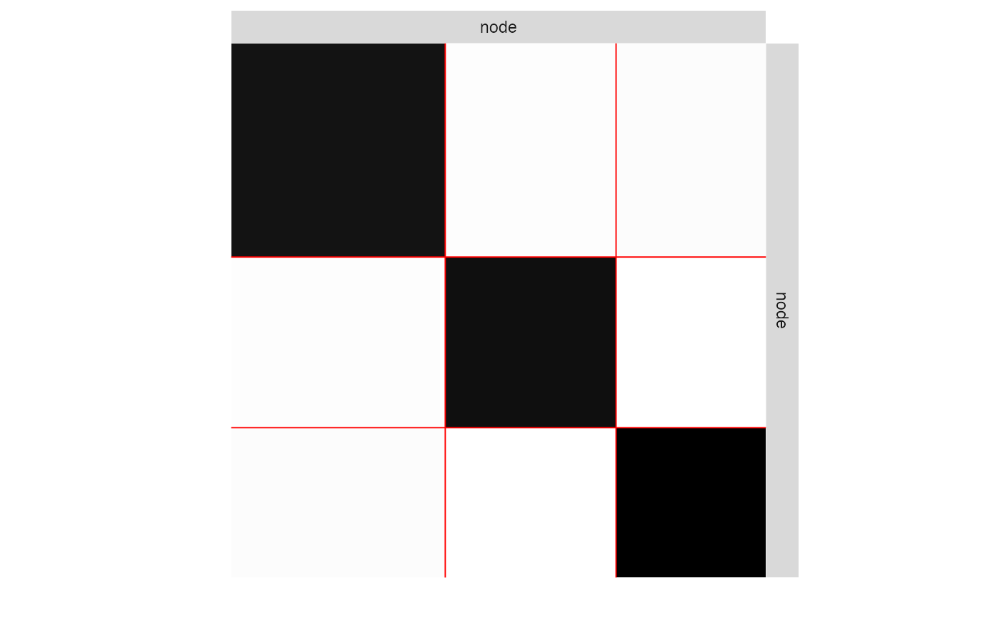
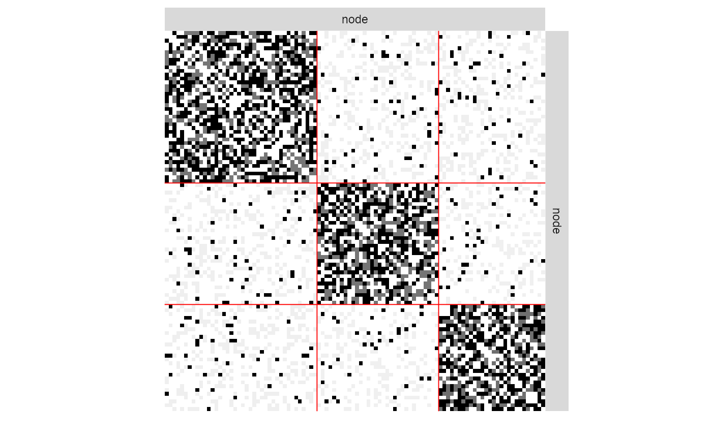
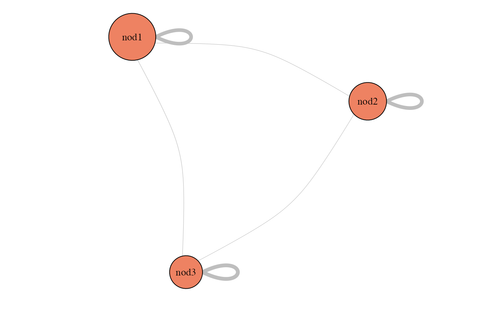

Variational EM inference of Stochastic Block Models indexed by block number from a partially observed network.
estimateMissSBM( adjacencyMatrix, vBlocks, sampling, covariates = list(), control = list() )
| adjacencyMatrix | The N x N adjacency matrix of the network data. If |
|---|---|
| vBlocks | The vector of number of blocks considered in the collection. |
| sampling | The model used to described the process that originates the missing data: MAR designs ("dyad", "node","covar-dyad","covar-node","snowball") and MNAR designs ("double-standard", "block-dyad", "block-node" , "degree") are available. See details. |
| covariates | An optional list with M entries (the M covariates). If the covariates are node-centered, each entry of |
| control | a list of parameters controlling advanced features. See details. |
Returns an R6 object with class missSBM_collection.
Internal functions use future_lapply, so set your plan to 'multisession' or
'multicore' to use several cores/workers.
The list of parameters control tunes more advanced features, such as the
initialization, how covariates are handled in the model, and the variational EM algorithm:
"useCov": logical. If covariates is not null, should they be used for the
for the SBM inference (or just for the sampling)? Default is TRUE.
"clusterInit": Initial method for clustering: either a character ("spectral")
or a list with length(vBlocks) vectors, each with size ncol(adjacencyMatrix),
providing a user-defined clustering. Default is "spectral".
"similarity": An R x R -> R function to compute similarities between node covariates. Default is
missSBM:::l1_similarity, that is, -abs(x-y). Only relevant when the covariates are node-centered
(i.e. covariates is a list of size-N vectors).
"threshold": V-EM algorithm stops stop when an optimization step changes the objective function or the parameters by less than threshold. Default is 1e-2.
"maxIter": V-EM algorithm stops when the number of iteration exceeds maxIter. Default is 50.
"fixPointIter": number of fix-point iterations in the V-E step. Default is 3.
"exploration": character indicating the kind of exploration used among "forward", "backward", "both" or "none". Default is "both".
"iterates": integer for the number of iterations during exploration. Only relevant when exploration is different from "none". Default is 1.
"trace": logical for verbosity. Default is TRUE.
The different sampling designs are split into two families in which we find dyad-centered and node-centered samplings. See doi: 10.1080/01621459.2018.1562934 for a complete description.
Missing at Random (MAR)
"dyad": parameter = p = Prob(Dyad(i,j) is observed)
"node": parameter = p = Prob(Node i is observed)
"covar-dyad": parameter = beta in R^M, such that Prob(Dyad (i,j) is observed) = logistic(parameter' covarArray (i,j, .))
"covar-node": parameter = nu in R^M such that Prob(Node i is observed) = logistic(parameter' covarMatrix (i,)
"snowball": parameter = number of waves with Prob(Node i is observed in the 1st wave)
Missing Not At Random (MNAR)
"double-standard": parameter = (p0,p1) with p0 = Prob(Dyad (i,j) is observed | the dyad is equal to 0), p1 = Prob(Dyad (i,j) is observed | the dyad is equal to 1)
"block-node": parameter = c(p(1),...,p(Q)) and p(q) = Prob(Node i is observed | node i is in cluster q)
"block-dyad": parameter = c(p(1,1),...,p(Q,Q)) and p(q,l) = Prob(Edge (i,j) is observed | node i is in cluster q and node j is in cluster l)
"degree": parameter = c(a,b) and logit(a+b*degree(i)) = Prob(Node i is observed | Degree(i))
## SBM parameters N <- 100 # number of nodes Q <- 3 # number of clusters pi <- rep(1,Q)/Q # block proportion theta <- list(mean = diag(.45,Q) + .05 ) # connectivity matrix ## Sampling parameters samplingParameters <- .75 # the sampling rate sampling <- "dyad" # the sampling design ## generate a undirected binary SBM with no covariate sbm <- sbm::sampleSimpleSBM(N, pi, theta) ## Uncomment to set parallel computing with future ## future::plan("multicore", workers = 2) ## Sample some dyads data + Infer SBM with missing data collection <- observeNetwork(sbm$networkData, sampling, samplingParameters) %>% estimateMissSBM(vBlocks = 1:5, sampling = sampling)#> #> #> Adjusting Variational EM for Stochastic Block Model #> #> Imputation assumes a 'dyad' network-sampling process #> #> Initialization of 5 model(s). #> Performing VEM inference #> Model with 5 blocks. Model with 1 blocks. Model with 4 blocks. Model with 3 blocks. Model with 2 blocks. #> Looking for better solutions #> Pass 1 Going forward ++++ Pass 1 Going backward ++++collection$ICL#> [1] 10584.442 9886.688 9485.626 9534.831 9587.181#> $mean #> [,1] [,2] [,3] #> [1,] 0.50247919 0.05509355 0.05696972 #> [2,] 0.05509355 0.50953677 0.05164995 #> [3,] 0.05696972 0.05164995 0.53003541 #>#> Warning: 'as.is' should be specified by the caller; using TRUE#> Warning: 'as.is' should be specified by the caller; using TRUE#> Warning: 'as.is' should be specified by the caller; using TRUE#> Warning: 'as.is' should be specified by the caller; using TRUE#> [1] 0.7553535#> $mean #> [,1] [,2] [,3] #> [1,] 0.50247919 0.05509355 0.05696972 #> [2,] 0.05509355 0.50953677 0.05164995 #> [3,] 0.05696972 0.05164995 0.53003541 #>#> 5 x 5 sparse Matrix of class "dgCMatrix" #> #> [1,] . . 0.05164995 . . #> [2,] . . 1.00000000 1.00000000 . #> [3,] 0.05164995 1 . 1.00000000 . #> [4,] . 1 1.00000000 . 0.05509355 #> [5,] . . . 0.05509355 .